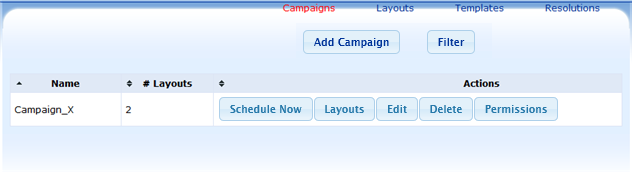
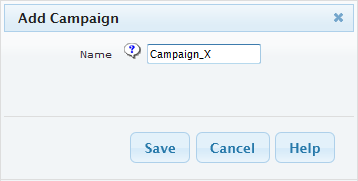
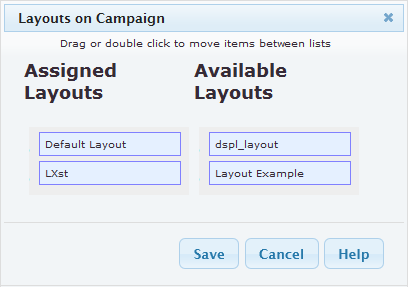

Xibo supports scheduling more than one layout at once. Say you have two layouts, each that last a total of 40 seconds. If you wanted them to show in sequence between 10:00 and 11:00am, you would schedule both layouts to run from 10:00am to 11:00am on the same display. The client will automatically switch between the two layouts every 40 seconds between those times.
In Xibo, this is done using Campaign that comprises multiple Layouts.
Note:
At the moment you cannot control the playing order of those layouts in Campaign.
The Campaign cannot be assigned as Default Layout for a Display, excpet to use it during Display schedule.


Once you have saved the Campaign; click on "Layouts" button and you will be taken to a new form.
